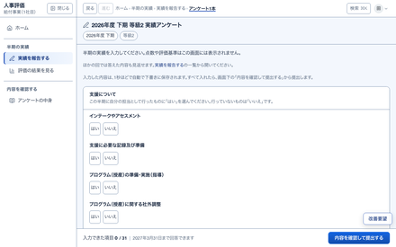
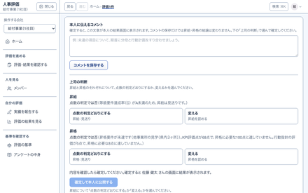

例: 田中 陽子さんの 2026年度上期白い段は人、青い段はしくみが自動で
1実績を答えて提出

入る: 等級要件の「はい・いいえ」と KPI の実績出る: 提出済みの回答
一般の社員
12実績をランクに当てる
ヒヤリ報告件数83件 → AA〜E の境目に当てる
入る: 実績の値と A〜E の境目出る: 項目ごとのランク
しくみ
3達成率と点数を出す
等級要件の達成率8 ÷ 15 → 53.3%KPI評価点32＋10＋10 ＝ 52点
入る: ランクと配点出る: 達成率と KPI評価点
しくみ
24昇給と昇格を判定する
昇給達成率 D → 見送り昇格52 ＜ 100点 → 見送り
入る: 点数と、昇給・昇格の条件出る: 判定と理由の文
しくみ
5確かめて確定する

入る: 判定どおりか変えるかと、その理由出る: 確定した評価とレポート
マネージャー
3